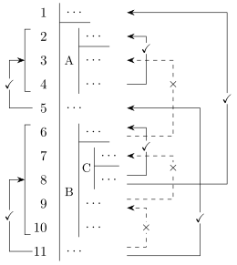

1.4 Proving an Implication: the Rule of the Box
Sections 1.2 and 1.3 gave three rules.
1.4.1. Supposing something we do not know
Here is a small theorem about a real number
If
, then .
The proof everyone would write goes like this.
Suppose
Look at the first sentence. We do not know that
Inside that world, the sentences “
None of the rules so far can do this:
A supposition is only safe if it has a boundary.
Without one, the proof above could go on: “… Hence
A derivation draws the boundary as a box. The assumption opens the box: it is written with a vertical bar to its left and a short horizontal rule under it. Every line derived under the assumption carries the same bar. When the box closes, the bar stops, and exactly one thing leaves: the implication from the assumption to the box’s last line.
To prove “if
1.4.2. The introduction rule for implication
From now on the given part of a schema may also be a box, cited as a range of lines from its first line to its last; nothing else in Definition 1.2.1 changes.
Here is the rule, as a pattern. Beside it, for
reference, is the rule
The left schema is the rule
As in every schema (Definition 1.2.1),
- Open a box whose first line is the
assumption
- Inside the box, work as usual. Every rule may be used. A line inside may cite the assumption and every earlier line that is not inside a box that has already closed: the premises, the lines above the box that are still in force, and the lines derived inside the box so far.
- The last line of the box is
- Close the box, and write
- After the box closes, nothing inside it may be cited again. The assumption is discharged, and everything derived under it goes with it. Only the implication leaves.
Clause 5 is the boundary of the temporary world. The subsection “Which lines a line may cite” below turns clause 5 into an exact rule.
What each box is for. From now on
every assumption says, in its justification column, what
its box is for. “asm, for
Second readingA box of one line
The degenerate case is
Why the rule is right. The implication
Why the box closes. The lines inside hold
only under the assumption. If the assumption is false,
as
1.4.3. A first box: implication is transitive
The first result proved with a box is the chaining of implications. Section 1.3 used chains of implications forwards, firing each on a hypothesis already in hand. Here the hypothesis is not in hand, and we still want the chain.
Idea. Start from the goal. Its main
connective is
In the Givens/Goal table,
| Givens | Goal |
|---|---|
The same search as a growing derivation: the box
opened, its goal
Proof. The following derivation has
premises
Line 3 opens a box with the assumption
Read the drawing once more. The bar that starts at
line 3 stops after line 5. The statements
Now give the letters some content. Let
| Line | Sentence |
|---|---|
| 3 | Suppose |
| 4 | Since |
| 5 | Since |
| 6 | Hence, if |
A practiced writer would compress this to “if
Remark. The same result holds with
the two premises joined into one,
1.4.4. Argument B, diagnosed
Section 1.1 broke the form of Argument B’s last step.
Here is the rule B misused. With
Line 1 is B’s “Suppose
B’s box opens with
The repair fails. Keep
Warning. The box of
Quick check. A proof of “if
Solution. Its box opens with
Second readingTwo errors that cancel
Let
Solution. As a derivation, the “proof” reads as follows.
Two lines fail. Line 2 is no fact about numbers: at
The two errors cancel. The implication the box would
earn is false, and reversed it is the true claim: if
1.4.5. A box must end on a line of its own
Try to derive
A checker reads the box
The fix is bookkeeping: copy
Some books let a box end on any line available inside
it. This book copies the line in, so that every
1.4.6. Which lines a line may cite
In a derivation without boxes (Definition 1.2.2),
a line may cite any earlier line. With
boxes that is no longer enough: after the derivation of
Proposition 1.4.1,
a line 7 citing line 5 would write
A line inside a box may be cited only from inside that box. Once a box has closed above you, nothing inside it can be cited; the boxes you are in may be left across their tops, and passing beside a closed box is fine.
Open a box, close a box: an assumption lives exactly as long as its box.
A whole box, cited by
- a line in no box is available at every later line;
- a line inside a box is available further down that box, and inside every box opened within it;
- once its box closes, the line is available nowhere.
The figure shows eleven lines without statements: box
A is lines 2–4, box B lines 6–10, and box C, lines 7–8,
sits inside B. An arrow runs from a citing line up to
the line it cites, solid and marked

A line can be cited from below only while every box containing it is still open. Line 8 leaves box C across its top to cite line 6, and line 11 passes beside the closed box B to cite line 5. Lines 5 and 11 stand in no box, and neither do the boxes A and B they cite whole.
Quick check. In the figure, which of lines 1–9 may line 10 cite?
Solution. Lines 1, 5, 6 and 9. Lines 1 and 5 are in no box; lines 6 and 9 are in box B, which contains line 10. Lines 2–4 are not available (box A has closed), and neither are lines 7–8 (box C has closed). It may also cite the whole box 7–8, which, like line 10, stands in box B alone.
Here is the official version, the one a checker uses.
Fix a list of rules. A derivation is
a finite list of numbered lines
The scope rule. Line
Every line is exactly one of the following:
- (D1) a premise; the premises are the first lines, above every box, with a short rule under the last of them;
- (D2) an assumption, which may be any statement, and opens a new box;
- (D3) a repetition of the statement on a line available at this one, justified “R” and the line repeated;
- (D4) the conclusion of one rule of the list, applied to lines and boxes available at this one, such that this line and the cited lines and boxes form an instance of the rule’s schema.
Clause (D3) is the rule
where line
(D1)–(D4) say: given, assumed, copied, or one step of one rule, always from what is still available.
The scope rule is the definition’s real content: line
Second readingWhy checking stays mechanical
Well defined. Whether a line is available is decided by looking at the boxes; nothing about the meaning of the statements enters. Checking a derivation stays mechanical.
Nothing earlier changes. A derivation with
no boxes is a box-free derivation of Definition 1.2.2
for the same rules with
Second readingMore on repetition
The typical use of
Line
Warning. A box that is never closed
cannot end a derivation. If the last line of a list is
still inside a box, it depends on an assumption that was
never discharged, and Definition 1.4.2
does not count the list as a derivation at all. “Suppose
1.4.7. How to check a derivation
Section 1.2 checked a line by asking which rule it uses, which lines it cites, and whether they are earlier. With boxes the third question becomes: are they available here? For each line after the premises, ask:
- Which rule? Name it. An assumption
opens a box;
- Which lines or boxes does it cite, and do
they form an instance of the rule’s schema?
- Are they available here? Apply the scope rule to each cited line and box.
Finding a derivation may need an idea; checking one never does. Here is the check run on the derivation of Proposition 1.4.1.
| Line | Which rule? | Cites | Available? |
|---|---|---|---|
| 1, 2 | premises (D1) | — | — |
| 3 | assumption (D2); opens the box 3–5 | — | — |
| 4 | 1, 3 | 1 is in no box; 3 is in box 3–5, which contains 4 | |
| 5 | 2, 4 | 2 is in no box; 4 is in box 3–5, which contains 5 | |
| 6 | box 3–5 | the box ended at 5; neither it nor 6 lies in another box |
Every line passes, and the last line lies in no box. The bar shows the temporary world: it starts at line 3 and stops after line 5.
1.4.8. An assumption used outside its box
Now watch the scope rule catch an error. Take the derivation of Proposition 1.4.1 and add one careless line.
Is the following a derivation? If it were, what would it show?
Solution. No. Lines 1–6 are the
derivation of Proposition 1.4.1,
and line 7 claims to be a repetition (D3). Line 5 lies
inside the box
If it were allowed, the list would show
Warning. The assumption of a closed
box is gone, and so is everything derived from it. Here
is a typical slip. “Suppose
Quick check. In the derivation below, which of lines 3 to 7 may cite line 2 individually?
Solution. Lines 3, 4, and 5. They
lie in the box
1.4.9. More boxes: from nothing, and one inside another
Find a derivation of each sequent.
- (a)
- (b)
- (c)
Solution.
- (a) Idea.
The goal is an implication, so open a box with its
hypothesis
Line 1 is an assumption (D2) and opens the box
- (b) Idea.
This is the derivation the checker accepted after the
fix in “A box must end on a line of its own”: line 3
copies
Line 3 is legal: the only box containing line 1, the box
- (c) Idea.
The goal
Both boxes opened, goals at their feet (left); then the inner lines written, and only line 7 still to justify (right).
The finished derivation:
Line 5 cites line 2 from inside the inner box: every
box containing line 2 (only
In (b) and (c) the goal told us which boxes to open,
and in which order: the outermost
1.4.10. Two hypotheses, or one at a time
A theorem with two hypotheses, “if
Try it first (ten minutes): for the first claim, which boxes will you open, and in which order?
Idea. The tempting first move is
premise-directed: use
The first claim: the outer box opened (left), then
the inner one, with goal
The second claim: the box opened (left), then the assumption taken apart (right).
Before reading on: in the first derivation, which lines may line 4 cite, and why may line 6 cite the box 3–5 but not line 5 on its own?
Proof. For the first claim, the
following is a derivation with premise
Line 4 may cite lines 1, 2, and 3: line 1 lies in no
box, the only box containing line 2 (the box
For the second claim, the following is a derivation
with premise
Lines 3–6 cite line 1, which lies in no box, or
earlier lines of the box
Quick check. In the second derivation of Proposition 1.4.2, what does the annotation of line 2 say, and which line closes its box?
Solution. “asm, for
In the first derivation the boxes are nested, and the inner one closes first: an assumption made later is discharged earlier. That is the general pattern, forced by Definition 1.4.2, since two boxes are either disjoint or one inside the other.
Read mathematically, the first claim turns “if
Quick check. To show
Solution. Two. The goal’s main
connective is
The two boxes are disjoint: the first closes before the second opens. Line 8 may cite lines 4 and 7, which lie in no box.
1.4.11. The rule card
Before the card, the rule at work on large
statements. Each row is one use of
| The box | New line | ||
|---|---|---|---|
| from |
|||
| from |
|||
| a box of one line |
Not an instance. A box opens with
The card grows by two rows. In Shape, “box
| Rule | Shape | You write | Lean |
|---|---|---|---|
| “We show |
constructor |
||
| “In particular, |
h.1 (and h.2) |
||
| “Since |
exact h hp |
||
| box |
“Assume |
intro hp |
|
| “As shown above, |
exact hp |
In the Lean column, intro hp opens the
box and names its assumption hp.
Warning (Not allowed:
- Close the box on a line of a box inside it: clause 3, the last line must be a line of the box itself (“A box must end on a line of its own”).
- Write
- Cite a line inside a closed box: clause 5 (Example (A line cited from a closed box)).
- End the derivation inside an open box: clause 4, the box must close (the warning on a box that is never closed).
- Cite the box’s lines one by one: clause 4, the box is cited whole, as a range.
The discharge is where the rule bites, so here is one
wrong step beside the right one, with premises
The left list would show
The sentence for
Remark (Looking ahead). Chapter 2 proves the claim Argument B wanted, with the rules for “not”.
1.4.12. Exercises
A. Check your understanding
Consider the following derivation, whose justifications are missing.
- (a) Write the schema
of
- (b) Fill in the
justifications (i), (ii), (iii), and say what the
derivation shows, written with
- (c) Which of lines 1–5 are available at line 6, and which boxes?
- (d) Someone extends
the derivation by a line 7, the statement
- (e) In the first derivation in the proof of Proposition 1.4.2, why is line 4 available at line 5? And why is the inner box closed before the outer one?
- (f) In the same derivation, which rule produces line 5, and which lines does it cite?
Solution.
(a) The schema is the left one in Definition 1.4.1: a box from an assumption
- (b)
- (i)
- (i)
(c) Lines 1 and 2, and the box
(d) No. Line 6 is available at line 7, but line 3 is not: it lies in the box
(e) Line 4 lies in two boxes,
(f)
The parts run from one step, through a missing line, a justification column and steps to judge, to short derivations. Parts (e)–(g) refer to the eleven-line figure in “Which lines a line may cite”.
(a) A box runs from line 3,
(b) Line 7 is
(c) Line 9 is
(d) Say which lines below are premises and which are assumptions, and fill in (i) and (ii).
12(e) May line 8 cite line 5?
(f) May line 9 cite the whole box 2–4?
(g) May line 11 cite line 6?
(h) A box runs from line 3,
(i) Find the illegal line, and say why it is illegal.
12(j) Let
(k) Show
(l) Derive
(m) Derive
(n) Derive
(o) Derive
Solution.
(a)
(b) Line 2 is
(c) Line 4 is the assumption
(d) Line 1 is a premise and line 2 an assumption; (i)
(e) Yes: line 5 lies in no box.
(f) No: box 2–4 stands in no box, and line 9 stands in box B, so the two do not stand in exactly the same boxes.
(g) No: line 6 is inside box B, which closed after line 10.
(h) No: lines 3–4 are not a box, since the box runs on to line 6.
(i) Line 5: it cites line 2, which lies inside the box
(j) No. The box opened by “suppose” never closes, so nothing has left it; and at
(k) The goal is an implication, so open a box with
In prose: Assume
(l) 2
(m) 2
(n) The box of
(o) 2
B. Practice
A search for
Solution. The move is
goal-directed, twice: an implication goal opens a box
with its hypothesis, and the new goal is its conclusion.
The goal
Every citation is available. Lines 1 and 2 lie in no
box. Line 3 lies only in the box
- (a) Show that
- (b) Show that
- (c) Let
Solution.
- (a) The goal is an
implication, so open a box with
Line 3 needs repetition:
- (b) Two
implications, so two nested boxes: one with
Line 4 is legal: the only box containing line 2 also contains line 4. (Applying
- (c) “
- (a) Show that
- (b) Let
Solution.
- (a) The goal is an
implication, so assume
The assumption on line 3 is cited twice, by lines 4 and 5: a line is not used up when it is cited.
- (b) Take
In prose: Suppose
Here are nine lines, each a statement with its
justification. Seven of them, in the right order and
with the right boxes, form a derivation of
- (i)
- (ii)
- (iii)
- (iv)
- (v)
- (vi)
- (vii)
- (viii)
- (ix)
Solution. The order is (v), (ii), (ix), (viii), (iii), (i), (vi), with one box opened by (ii) and closed after (i), and a second box inside it, opened by (ix) and closed after (iii). This is the derivation of Example (First boxes) (c).
It is the only admissible order. The premise (v)
comes first. The last line (vi) needs a box from
(iv) cannot be used where it is placed. Directly below (i), the inner box has closed, and line (iii) lies inside it; so (iii) is not available there, and (D3) repeats only an available line (the scope rule of Definition 1.4.2). It is the error of Example (A line cited from a closed box).
(v) cannot be used.
C. Going deeper
A student wants to show
- (a) Find the first illegal line, and name the clause of Definition 1.4.2 that it breaks.
- (b) Is the student’s conclusion derivable from the premise? Justify your answer.
- (c) The student
defends line 10: “at line 10, both
Solution (Hint 1). For (a), check each line’s citations against the scope rule; for (b), keep the student’s idea and change one step.
Solution (Hint 2). For (b), inside
the box of
Solution.
(a) Line 10 is the first illegal line. It claims to repeat line 5 by (D3), but line 5 lies in the boxes
(b) Yes: the sequent is derivable. Replace line 10 by two lines that do inside the new boxes what lines 4 and 5 did inside the old ones.
12Every box containing line 8 or line 9 contains line 10, and line 1 lies in no box; the other lines check as before. The student’s derivation was wrong and its conclusion right: a flawed argument can have a true conclusion.
- (c) Availability is
about boxes, not about which statements
happen to be assumed. The boxes
Marking scheme. (10 points)
- 3: names line 10, because line 5 lies in boxes that do not contain it.
- 3: gives any correct derivation of the sequent, every citation available.
- 1: says the conclusion is derivable although the argument is wrong.
- 3: explains that availability depends on boxes, not on repeated assumptions, with an instance where the move leads from a true premise to a false conclusion.
Fatal errors (0 for the step): naming line 5 or line 9; claiming the sequent is not derivable; refuting the conclusion instead of the move.
Show that
Solution (Hint 1). Read the boxes
off the goal. The premise’s hypothesis is
Solution (Hint 2). Start: line 2
assumes
Solution. The goal
Line 5 is a legal repetition: both boxes containing
line 3 contain line 5. Line 8 may cite line 2 because
the box
The sentence: the premise fires only on an available
line
Line 1 does not help, since
Marking scheme. (10 points)
- 2: opens a box with
- 3: derives
- 2: obtains
- 2: closes the boxes inner first, each
- 1: the sentence says
Fatal errors (0 for the step): citing a line outside
the box that contains it; writing
- (a) Write a
derivation of
- (b) Let
Solution.
- (a) Premise-directed
first: the second premise is a conjunction, so
Lines 1–4 lie in no box, so they are available inside the box
- (b) The premise
In prose: We know that
Marking scheme. (10 points)
- 2: takes the conjunctive premise apart by two
- 2: opens a box with
- 2: reaches
- 1: each closing
- 3: prose with one sentence per step, “suppose” for the assumption, and a closing sentence stating the implication.
A route that first derives
Fatal errors (0 for the step): a box opened with the
conclusion
Each line of a derivation depends on the premises and on the assumptions of the boxes it sits in. Take the first derivation in the proof of Proposition 1.4.2 (lines 1–7).
- (a) Beside each line, write the set of line numbers of the premises and assumptions it depends on.
- (b) For line 5 and for line 6, write the sequent whose premises are the statements on the lines of that set and whose conclusion is the statement of the line. Show that each is derivable, by turning the open assumptions into premises.
- (c)
(Challenge.) Show that, in any derivation, the
set of a line cited by an
Solution.
(a) Line 1:
(b) Line 5 gives
Line 6 gives
In each, the lines down to the chosen one, with the assumptions of the boxes still open there made premises, form a derivation.
- (c) A line’s set
consists of the premises and the assumptions of the
boxes containing it. Let line
For
Marking scheme. (10 points)
- 3: all seven sets correct (the premise in every set; line 3’s assumption only in the sets of lines 3–5).
- 2: line 5’s sequent, with a correct derivation.
- 2: line 6’s sequent, with the box of
- 3: (c) uses the scope rule for the containment, and
names the one assumption that a
Fatal errors (0 for the step): putting line 3 in the set of line 6 or line 7; treating an assumption as a premise of the whole derivation.